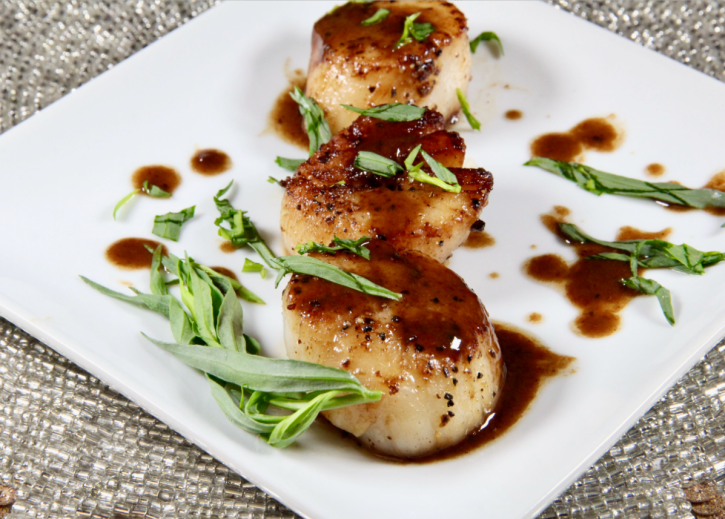

Balsamic-Glazed Sea Scallops

Description
Pan-seared scallops may seem intimidating to some, but it's really a simple dish to prepare. Sea scallops are amazingly tender, succulent, and mildly flavored, but when you style them up with a flavorful balsamic glaze, they can be a showstopper. They're sophisticated enough for dinner guests, but easy enough for a weeknight dinner.
ingredients
- 12 large sea scallops
- ¼ teaspoon seafood seasoning
- ¼ teaspoon salt
- ¼ teaspoon ground black pepper
- 2 tablespoons unsalted butter
- 1 tablespoon canola oil
- ½ cup dry white wine
- 1 tablespoon balsamic vinegar
- 1 teaspoon Dijon mustard
- 1 tablespoon chopped fresh tarragon (Optional)
Steps
- Pat scallops thoroughly with a paper towel to remove excess moisture and ensure a good sear. Combine seafood seasoning, salt, and pepper and use to lightly season both sides of the scallops.
- Heat butter and olive oil in a large skillet over medium-high heat. Add scallops to the skillet, being careful not to crowd. Cook until golden brown and a crust starts to form, about 3 minutes per side. Cook in batches if necessary to avoid steaming the scallops and be careful not to overcook. Remove from the skillet and cover to keep warm.
- Add white wine, balsamic vinegar, and Dijon mustard to the skillet and cook over medium heat, stirring constantly to scrape up the browned bits from the bottom. Cook until glaze is slightly thick and syrupy, 3 to 4 minutes.
- Move scallops to a serving plate, drizzle glaze on top, and garnish with chopped tarragon.
Return To Homepage